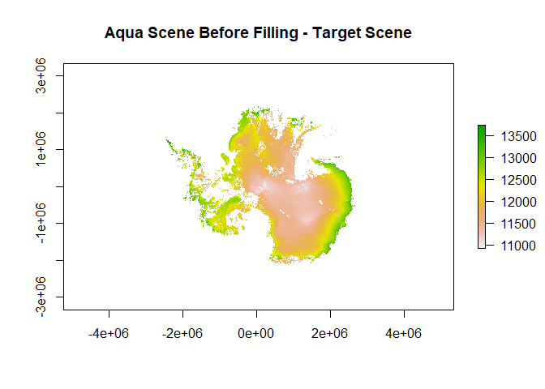
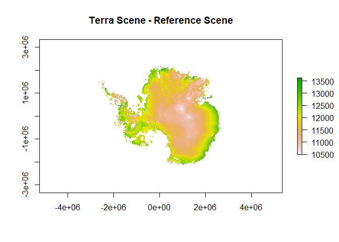
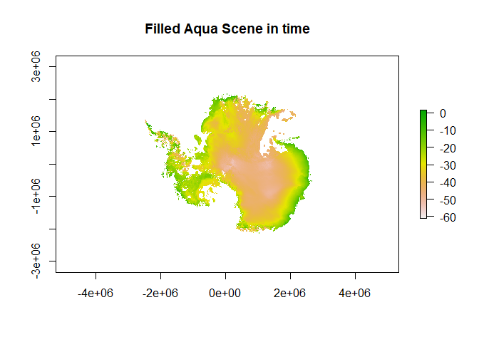
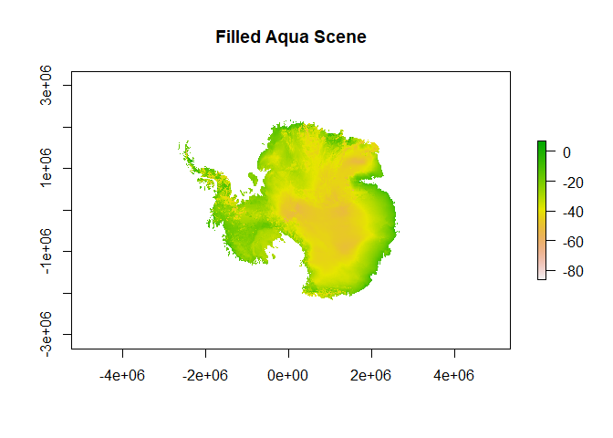

modislst is an R package for filling the gaps in MODIS LST data. Different functions have been implemented to reconstruct Aqua/Terra LST data. Using the nearest scene available in time, reconstruct the scene in space using GAM with 3-dimensional spatial surface and additional covariables like digital elevation model and aspect, or combine the two methods to get better results.
This work developed in fulfillment of the requirements for the Erasmus Mundus degree of Master of Science in Geospatial Technologies. At the Westfälische Wilhelms-Universität Münster, supervised by:
- Prof. Dr. Hanna Meyer
- Maite Lezama Valdes
- Prof. Dr. Ignacio Guerrero
Installation
You can install the released version of modislst from GitHub, just run in your R console the following code:
remotes::install_github("masawdah/modislst")Example
This example shows you how to fill the gaps of the daytime Aqua scene (target) on 31 October 2016 using the available Terra scene on the same day, then fill the remaining gaps in space.
Setup
Call modislst and prepare the necessary data. This example will show you how to fill the Aqua LST scene for Antarctica.
In this example, Aqua/Terra LST overpasses on 31 October 2016 for Antarctica have been downloaded using MODIS package, then reprojected and cropped to use them immediately in the examples.
Aspect and Digital Elevation Model of Antarctica obtained from National Snow & Ice Center (https://nsidc.org/data/nsidc-0082/versions/2)] were used as covariables after matching their extent and origin with the Aqua/Terra scenes.
library(modislst)
library(raster)
#> Warning: package 'raster' was built under R version 4.0.3
#> Loading required package: sp
#> Warning: package 'sp' was built under R version 4.0.3
## Add the target scene (aqua), and the reference scene (terra)
aqua <- raster(system.file("MODIS_data","aqua.tif", package="modislst"))
terra <- raster(system.file("MODIS_data","terra.tif", package="modislst"))
## Add covariables to improve the results
dem <- raster(system.file("covariables","dem.tif", package="modislst"))
aspect <- raster(system.file("covariables","aspect.tif", package="modislst"))
## Plot the Aqua/Terra scene before the filling process
plot(aqua,main="Aqua Scene Before Filling - Target Scene")
plot(terra, main="Terra Scene - Reference Scene")
Fill the gaps in time
## Fill the gaps partially in time using a moving window of size 47*47.
filledAqua <- fillingInTime(target= aqua,reference= terra, m=47)
## Plot the filled Aqua scene
plot(filledAqua, main="Filled Aqua Scene in time")
Fill the gaps in space
## Fill the remaining gaps in space.
filledAqua <- fillingInSpace(lstInput=filledAqua, covariable1=dem, covariable2=aspect)
## Plot the filled Aqua scene
plot(filledAqua, main="Filled Aqua Scene")